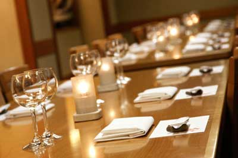
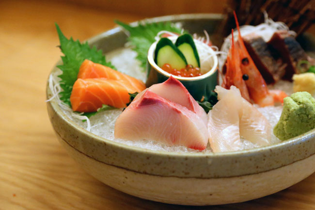
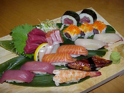
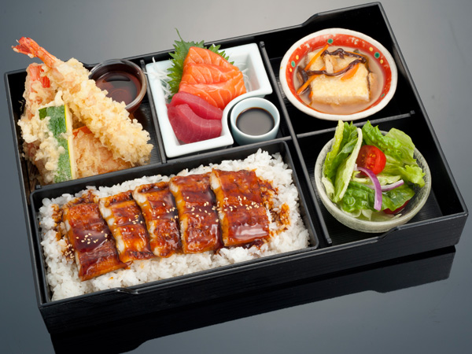
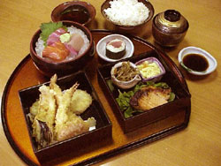
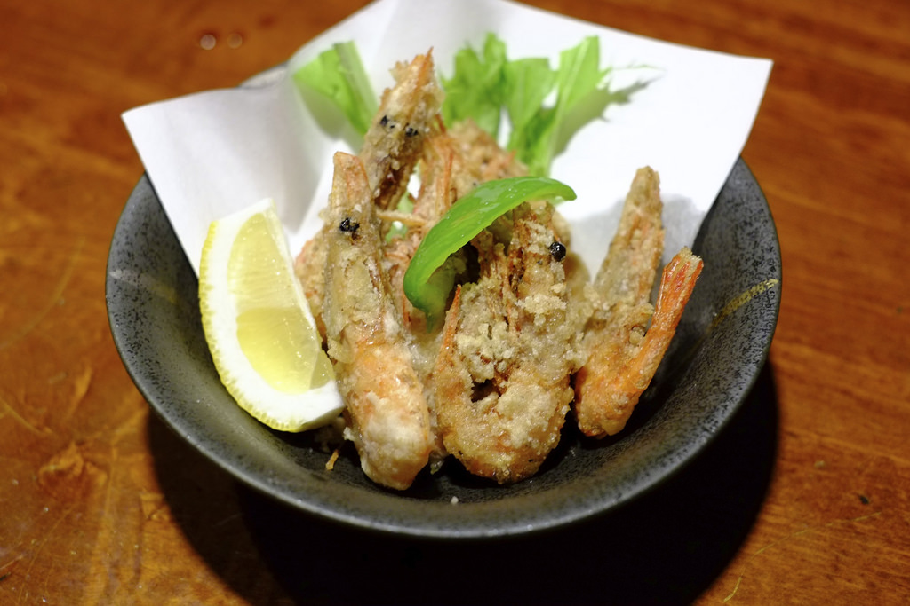
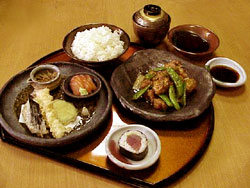
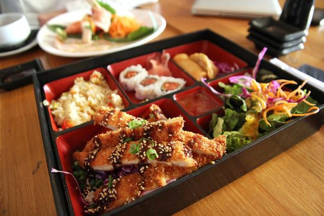

Menu

Onimusha is the art of Japanese dining, a harmony of style, substance, tradition and innovation.
For a business or longer enjoyable lunch, you will journey through the pleasures of traditional Japanese cuisine presented to you in a fresh and exciting way.
Onimusha offers a superb menu in a contemporary and welcoming setting. In the restaurant, you will find yourself surrounded by unique Japanese artwork and pottery, complementing the restaurant's modern yet traditional design.
DEGUSTATION MENU
- 
'OMAKASE' - (8 special courses) per person
Price: $66.00
SET MENU
- 
'SUSHI & SASHIMI'
Description: 8 pieces of Nigiri sushi, sushi rolls, assorted sashimi and Miso soup
Price: $40.00 - 
'ONIMUSHA BENTO'
Description: Sashimi, grilled fish, assorted Tempura, simmered vegetables, Onimusha’s ‘amuse-bouche’, rice and Miso soup
Price: $40.00 - 
'SASHIMI & TEMPURA BENTO'
Description: Sashimi, assorted Tempura, grilled seasonal fish fillet, rice and Miso soup
Price: $38.00 - 
'PRAWN NANBAN BENTO'
Description: Deep-fried tiger prawns marinated in Nanban sauce served with Tartar sauce, assorted Tempura, rice and Miso soup
Price: $38.00 - 
'STEAK BENTO '
Description: Beef tenderloin steak with garlic soy sauce, assorted Tempura, rice and Miso soup
Price: $35.00 - 
'TERIYAKI CHICKEN BENTO'
Description: Beef tenderloin steak with garlic soy sauce, assorted Tempura, rice and Miso soup
Price: $35.00 -

'PORK CUTLET BENTO'
Description: Grain fed tender pork loin cutlet, assorted Tempura, sashimi, rice and Miso soup
Price: $35.00 -

'NOODLE BENTO'
Description: Udon (wheat noodles) or Soba (buckwheat noodles) served hot or cold, assorted Tempura, Teriyaki chicken and rice
Price: $35.00
WAGYU BEEF SPECIAL
Wagyu cattle produce meat that is rich in protein and essential fats such as ‘Omega 3 like’ monounsaturated fatty acids. These fats are displayed as white-fleck “rivers” within the red meat, which gives the meat its marbled appearance. This marbling is responsible for the firm texture of the raw chilled meat, but melts during grilling to provide a distinctively juicy taste as well as tenderness and an exceptional flavour.
Wagyu Beef is of the same superior quality that of the highly marbled Kobe beef, only the appellation is different due to the region where it is reared. The Australian standard of Wagyu quality grading is based on a marble score range from 0 to 9.
At Onimusha Restaurant, we only use sirloin beef with a marble score over 8. This quality is only available at Onimusha; you will be impressed by its outstanding taste!
- Onimusha style Wagyu Beef Carpaccio with Caviar 180g $39.00
- Seared Wagyu Beef served with Daikon & soy citrus sauce 100g $22.00
- Wagyu Beef steak with Onimusha’s garlic soy sauce 180g $39.00
A LA CARTE
- Assorted vegetable Tempura: $22.00
- Assorted seafood and vegetable Tempura: $35.00
- Deep-fried tiger prawn marinated in Nanban sauce: $29.50
- Grilled seasonal fish fillet: $29.50
- Grilled silver Cod fillet marinated in Saikyo-miso: $29.50
- Skinless chicken fillet with Teriyaki sauce: $26.00
- Beef tenderloin steak with garlic soy sauce: $29.00
- Grain fed tender Pork loin cutlet: $29.00
SIDE DISH
- Daikon salad seasoned with Onimusha’s soy vinaigrette: $13.00
- Bean curd salad seasoned with Onimusha’s soy vinaigrette: $13.00
- Selection of seasonal Japanese pickles: $13.00
- Edamame (warm green soy beans): $9.00
- Miso soup: $3.50
- Rice: $3.50